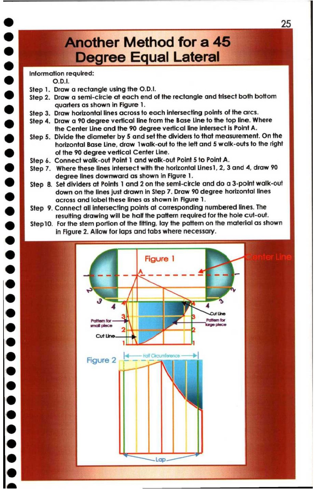

25. Another Method for a 45 Degree Equal Lateral

bd 25
e Another Method fora 45 ~
. ' Degree Equal Lateral
Information required:
@ O.D.I.
Step 1. Draw a rectangle using the O.D.I.
@ Step 2. Draw a semi-circle at each end of the rectangle and trisect both bottom
6 quarters as shown in Figure 1.
Step 3. Draw horizontal lines across to each intersecting points of the arcs.
e@ Step 4. Draw a 90 degree vertical line from the Base Line to the top line. Where
the Center Line and the 90 degree vertical line intersect is Point A.
®@ Step 5. Divide the diameter by 5 and set the dividers to that measurement. On the
horizontal Base Line, draw 1walk-out to the left and 5 walk-outs to the right
® of the 90 degree vertical Center Line.
Step 6. Connect walk-out Point 1 and walk-out Point 5 to Point A.
& Step 7. Where these lines intersect with the horizontal Lines1, 2, 3 and 4, draw 90
degree lines downward as shown in Figure 1.
@ Step 8. Set dividers at Points 1 and 2 on the semi-circle and do a 3-point walk-out
r) down on the lines just drawn in Step 7. Draw 90 degree horizontal lines
across and label these lines as shown in Figure 1.
®& Step 9. Connect all intersecting points at corresponding numbered lines. The
resulting drawing will be half the pattern required for the hole cut-out.
r ) Step10. For the stem portion of the fitting, lay the pattern on the material as shown
e in Figure 2. Allow for laps and tabs where necessary.
r a /\| ee f
: 3 4 ay = = j
1 i
@ : Figure 2 ne Rika | }
r ) ro “i AN \
e : |
q a ie.
a 4
e 4 ‘
z_ ee ee ee |